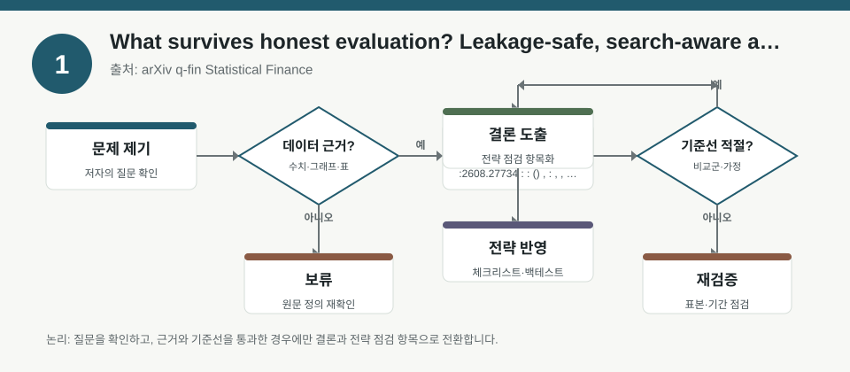
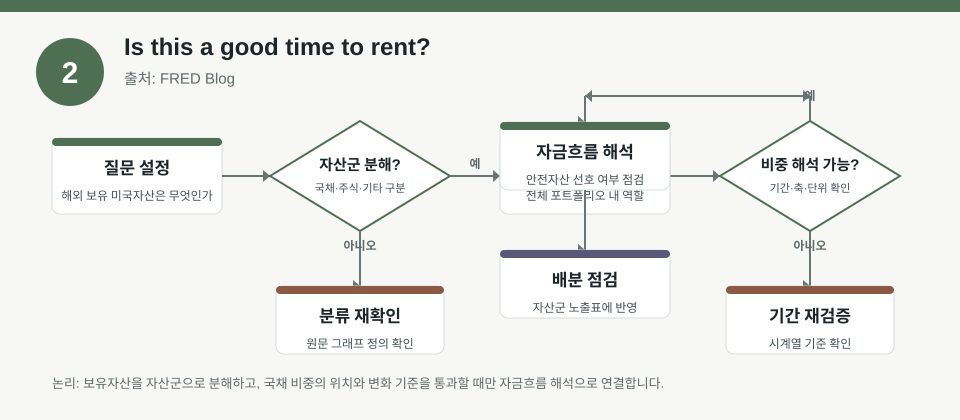
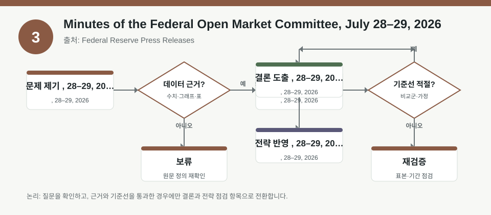

핵심 요약
- 결론: 이번 자료들은 미국 금리·주거비·전략검증 리스크를 함께 보게 하며, 한국 투자자는 KOSPI/KOSDAQ 업종 민감도와 FX·금리·변동성 점검표를 분리해서 확인하는 방식이 유효합니다.
- 원칙: 숫자와 결론은 원문에서 검수하고, 백테스트는 누수·검색편향·가정 차이를 먼저 확인해야 해석이 안전합니다.
주목할 자료
| 번호 | 자료 | 출처 | 원문 | 핵심 내용 | 데이터 포인트 | 리스크/한계 |
|---|---|---|---|---|---|---|
| 1 | What survives honest evaluation? Leakage-safe, search-aware assessment of LLM-driven trading strategy discovery | arXiv q-fin Statistical Finance | 원문 보기 | LLM이 만든 전략을 평가할 때, 누수와 과도한 탐색을 통제하지 않으면 성과 해석이 왜곡될 수 있음을 다룸 | 팩터 노출, 탐색 강도, 누수 방지, 검증 분리 여부를 확인해야 함 | 성과 수치보다 검증 설계가 핵심이며, 원문에서 샘플 분할·워크포워드·다중검정 보정 유무를 확인해야 함 |
| 2 | Is this a good time to rent? | FRED Blog | 원문 보기 | 주택 보유 비용과 임차 비용의 상대 비교를 통해, 주거 결정이 거시금리 환경과 자산배분에 어떤 힌트를 주는지 보여줌 | 보유비용 대 임대비용 비율, 모기지 금리, 주거 인플레이션, 지역별 차이를 확인해야 함 | 수치는 시점·지역별 편차가 크므로 한국 투자자 관점에서는 미국 주거지표를 금리·소비·리츠 섹터 신호로만 해석해야 함 |
| 3 | Minutes of the Federal Open Market Committee, July 28–29, 2026 | Federal Reserve Press Releases | 원문 보기 | 연준 회의록은 인플레이션·고용·금리 경로에 대한 정책 판단을 보여주며, 위험자산 민감도를 점검하는 데 유용함 | 정책위원의 금리 경로 인식, 인플레이션 완화 속도, 노동시장 해석, 대차대조표 언급을 확인해야 함 | 회의록은 해석 문서이므로 실제 정책 결정과 시차가 있고, 숫자·표현은 FOMC 발표문과 함께 교차검증해야 함 |
자료별 상세
1. What survives honest evaluation? Leakage-safe, search-aware assessment of LLM-driven trading strategy discovery

- 핵심: 전략 발견형 백테스트는 “무엇을 찾았는가”보다 “얼마나 많이 찾았는가”가 성과 해석을 좌우할 수 있습니다.
- 데이터 포인트: 팩터 노출과 탐색 강도, 그리고 학습·검증 분리 방식이 핵심 점검 항목입니다.
- 리스크: 누수, 과최적화, 다중비교, 데이터 스누핑 여부를 원문에서 확인해야 합니다.
- 투자전략 반영 예시: 한국 투자자는 KOSPI/KOSDAQ 업종별 팩터 민감도, 환율 민감 수출주, 금리 민감 성장주의 검증 구간을 따로 나눠 점검하는 체크리스트로 활용할 수 있습니다.
- 실행 예시: 백테스트 결과를 볼 때 단일 성과표만 보지 말고, 워크포워드·아웃오브샘플·거래비용·슬리피지 가정이 모두 적혀 있는지 먼저 확인합니다.
2. Is this a good time to rent?

- 핵심: 주거의 임대·보유 비교는 금리 수준과 주거비 인플레이션이 결합된 거시 신호로 읽을 수 있습니다.
- 데이터 포인트: 보유 비용 대비 임대 비용이 역사적 고점 부근인지, 그리고 지역별 차이가 얼마나 큰지 확인이 필요합니다.
- 리스크: 미국 주거 데이터이므로 한국 주식시장에는 직접 수치 적용이 어렵고, 시점·지역·주택 유형별 편차를 검수해야 합니다.
- 투자전략 반영 예시: 한국 투자자는 미국 금리 변화가 건설·리츠·소비재·달러 민감 업종에 미치는 경로를 따로 정리해 KOSPI/KOSDAQ 섹터 노출 점검표에 넣을 수 있습니다.
- 실행 예시: 포트폴리오 점검표에 “미국 주거비, 모기지 금리, 한국 원/달러 환율, 국내 금리 민감 업종 비중” 항목을 추가해 월 1회 확인합니다.
3. Minutes of the Federal Open Market Committee, July 28–29, 2026

- 핵심: 회의록은 연준의 인플레이션 해석과 정책 경로를 읽는 자료로, 글로벌 금리 민감 자산의 변동성 점검에 유용합니다.
- 데이터 포인트: 금리 유지·인하·추가 긴축에 대한 위원들의 표현, 노동시장과 물가 평가, 대차대조표 언급을 확인해야 합니다.
- 리스크: 회의록은 과거 논의의 기록이므로 즉시 정책을 뜻하지 않고, 시장은 발표문·기자회견과 함께 반응할 수 있습니다.
- 투자전략 반영 예시: 한국 투자자는 은행, 성장주, 헬스케어, 수출주처럼 금리·환율·달러에 민감한 업종의 노출을 따로 분류해 점검할 수 있습니다.
- 실행 예시: 회의록에서 인플레이션 표현이 완화되는지, 실업률 위험이 강조되는지, 대차대조표 축소 언급이 유지되는지 체크한 뒤 섹터 민감도 메모를 업데이트합니다.
팩터·리스크·포트폴리오 관점
- 핵심: 세 자료를 함께 보면, 백테스트는 검증 설계, 거시 자료는 금리·주거비·달러 경로, 포트폴리오는 섹터 민감도와 환율·변동성 노출 관리가 핵심입니다.
- 검수: 원문에서 사용한 표본 기간, 지역 범위, 비용 가정, 발표 시차를 확인하지 않으면 한국 시장 적용 해석이 과도해질 수 있습니다.
정리
- 결론: 오늘의 포인트는 “성과 숫자”보다 “데이터 생성 방식과 거시 경로”를 먼저 확인하는 것입니다.
- 다음 확인: 원문에서 백테스트의 분할 방식, FRED의 계산 기준, FOMC 회의록의 정책 표현 변화를 교차 확인해야 합니다.